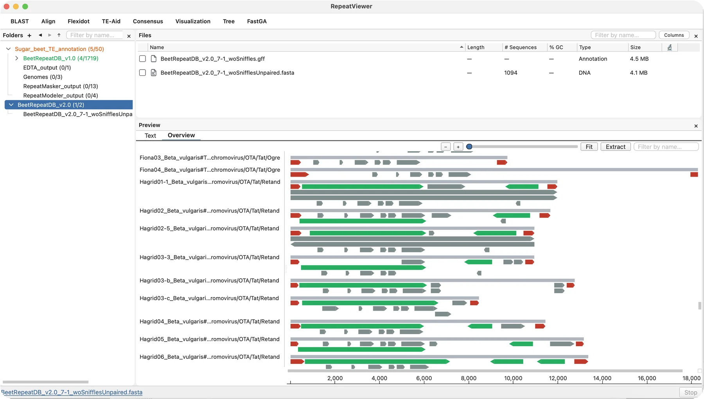
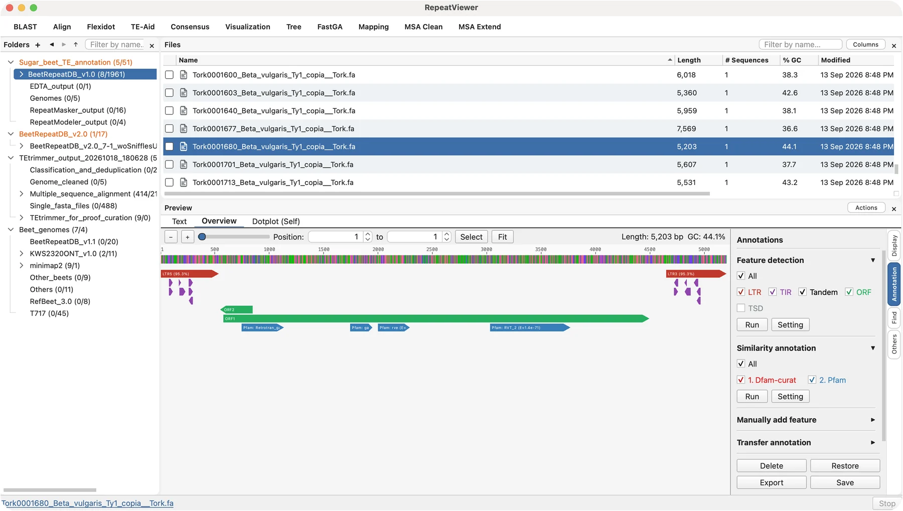
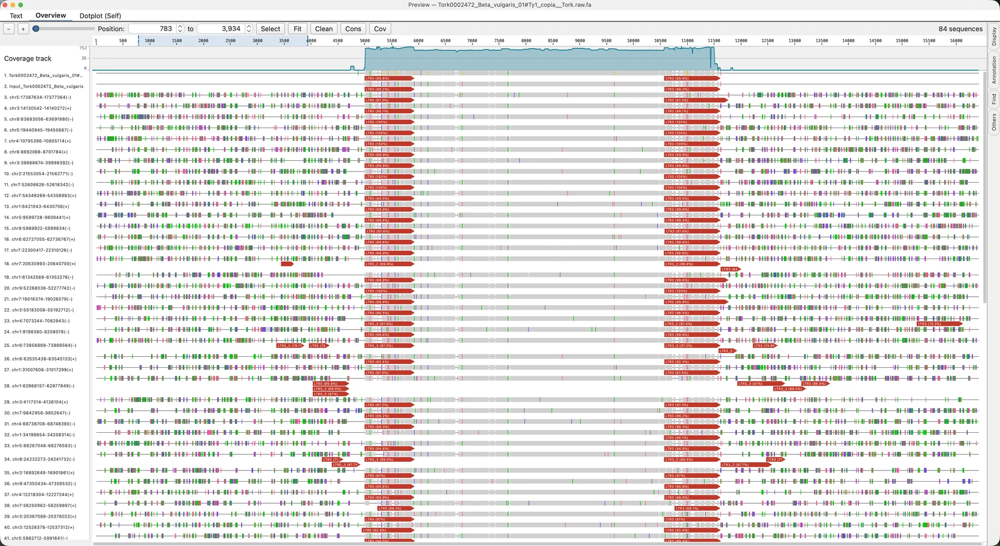
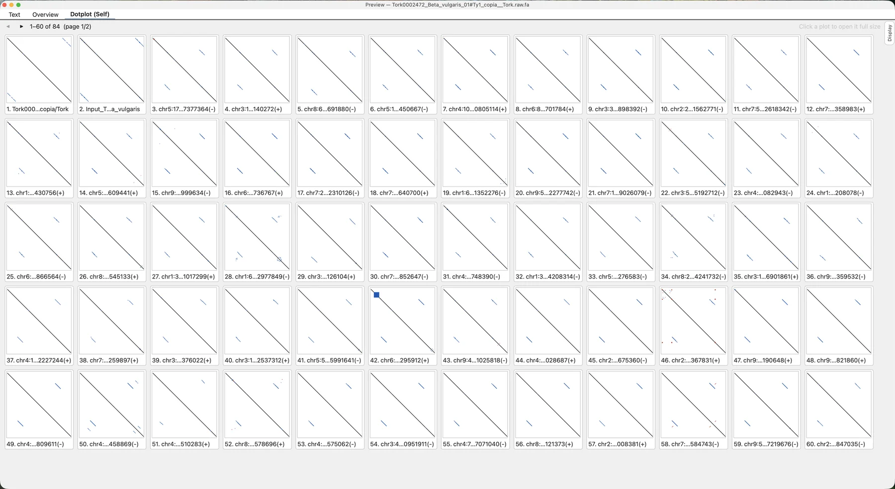

Curate transposable elements in one window.
RepeatViewer opens a folder of candidate TE sequences and lets you annotate, align, trim and plot them without leaving the app. Every result lands next to its input, ready for the next step.
Built for the last mile of curation
TE discovery pipelines give you candidate consensus sequences that are rarely ready to publish. Boundaries are off, terminal repeats are truncated, alignments carry junk rows. Fixing that is manual and repetitive, so RepeatViewer keeps the whole loop in one place.
- Add a folderDrag your candidates into the Folders panel. Subfolders, filters and history work like a file browser.
- Click a sequenceThe Preview shows it as text, as an annotation map and as a dotplot.
- Run a toolBLAST, align, clean, extend or build a consensus from the toolbar. Jobs run in the background.
- Pick up the outputThe result appears in the same folder, highlighted, and becomes the input for the next tool.

See the structure of every candidate
Auto annotation finds terminal repeats, tandem repeats and open reading frames as soon as you ask. Similarity annotation adds protein domains from your own databases.
- Detect LTRs, TIRs, tandem repeats and ORFs interactively
- Drag feature edges to fix boundaries, then save
- Export the annotation as GFF

Copy annotation to related sequences
Curated one element by hand? Transfer its features to every related sequence. You set the identity and coverage cut-offs, and the matches are drawn as soon as they are found.
- Pick any annotated file as the source
- Tune identity, coverage and strand
- Keep, edit or delete what was transferred
Find the copies, clean the alignment, in one run
Save a chain of tools as a workflow and run it on any candidate. The built-in BEEA workflow runs BLAST, MSA Extend, MAFFT, MSA Clean, Consensus and TE-Aid in a row, and every intermediate file stays in the folder.
- BLAST against a genome or a pan-genome list
- Align with MAFFT or MUSCLE, then clean and extend
- Keep or drop each intermediate result
Large alignments, with the annotation on top
Scroll through alignments with tens of thousands of columns without opening another program. Annotation features and a coverage track sit on the alignment, so the real boundaries are easy to see.
- Color by nucleotide, conservation or divergence
- Select a region and trim, clean or build a consensus from it
- Coverage track above the rows

A dotplot for every sequence
Every sequence has a dotplot tab. Open an alignment and get one dotplot per copy, side by side, to spot the truncated and rearranged ones at a glance.
- Built-in dotplot for single and multiple sequences
- Interactive Flexidot plots that jump to the matching annotation
- Annotation tracks and sequence boundaries drawn on the axes

Open almost anything in the Preview
Alignments, PDFs, HTML reports, GFF files, images and plain text all open in the same panel. No more switching between an alignment viewer, a PDF reader, a browser and a text editor.
- FASTA, alignments and GFF annotation
- PDF and image files
- TE-Aid and other HTML reports
From one element to the whole genome
When a library is ready, see where it sits in the genome and how old it is. Turn TE types on and off, and save the figure as SVG or PDF.
- TE density along chromosomes, divergence landscapes and abundance
- Repeat Quantify with RepeatMasker or BLASTn
- TE-Aid reports, phylogenetic trees and read mapping
Your parameters, and a record of every run
Every tool opens with its settings, each explained with a help button. Change them, save them as your defaults, or restore the originals. Every command RepeatViewer runs is written to a log you can open from Preferences.
- Parameters for BLAST, MAFFT, MUSCLE, FastGA and the rest
- Help text next to each option
- Full command lines in the log
Search your own databases
Point RepeatViewer at protein, DNA and HMM databases once, under Manage Database, and every similarity search uses them.
- Pfam
- Dfam
- REXdb
- Repbase
- CDD
- Your own FASTA
Add your own tools
Wrap any command-line program as a tool with its own parameter dialog, or write a plugin in Python for anything bigger. Your tools can join workflows like the built-in ones.
Everything else it does
Each tool reads the files you select and writes its output beside them.
Sequences
- New sequence
- Combine into one file
- Extract from a file
- Separate sequences
- Reverse complement
- ORF prediction
- Translate
Analysis
- BLAST
- Align, MSA Clean, MSA Extend
- Consensus
- TSD search
- TE annotation
- FastGA alignment
- TreeIQ-TREE, FastTree or neighbour-joining
- Mapping to a reference
Visualization
- Built-in dotplot
- Flexidot
- TE-Aid
- TE density map
- TE divergence plot
- TE abundance plot
- MSA plot
- Open in AliView
Benchmarking
- Confusion matrixCompare two classifications of the same library
- TE library benchmarkScore a library against a reference with RepeatMasker
Install
For now, install from source with Python 3.10 or later. Prebuilt packages for macOS, Windows and Linux are in preparation.
Get the code.
git clone https://github.com/qjiangzhao/RepeatViewer.git cd RepeatViewer
Create a conda environment and install.
conda create -n repeatviewer "python>=3.10" -y conda activate repeatviewer pip install -e .
Start it.
repeatviewer
Install Python 3.10 or later and tick Add python.exe to PATH. You also need Microsoft Visual Studio Build Tools with the C++ workload.
Download the source ZIP, unzip it into a folder you own (Documents works), and open PowerShell there.
Create a virtual environment and install.
python -m venv repeatviewer .\repeatviewer\Scripts\Activate.ps1 python -m pip install -U pip pip install -e .
Start it.
repeatviewer
Optional tools
Most of RepeatViewer works without extras. Install these only for the tools that need them:
- RepeatMasker for Repeat Quantify and library benchmarking
- FastGA for whole-sequence alignment
- IQ-TREE or FastTree for maximum-likelihood trees
- AliView to open alignments outside the app
conda install -c bioconda -c conda-forge repeatmasker fastga -y
Then set the environment under File → Setting → External tools. On Windows, these tools run inside WSL2.
Try it on example data
Download the TEtrimmer test files and drag the folder into RepeatViewer.
Questions
Does RepeatViewer find TEs in a genome?
No. It does not discover TEs or build consensus sequences from a raw genome. That is what TEtrimmer does. RepeatViewer is where you inspect and refine the candidates afterwards.
Do I need TEtrimmer?
No. The two apps are independent. RepeatViewer works on any folder of TE sequences, whichever tool made them.
Where do the results go?
Into the same folder as the input, highlighted in the Files panel. There is no central results folder. If you do not see a new file, press F5 to refresh.
A tool says the genome is not set.
Open File → Manage Database and choose a genome FASTA or a pan-genome list. BLAST, MSA Extend, genome maps and genome-aware TE-Aid all need it.
RepeatMasker or FastGA is not found.
They are not installed with RepeatViewer. Install them into a conda environment, point File → Setting → External tools at it, and click Test. FastGA needs version 1.5 or newer.
Does it cost anything?
No. RepeatViewer is free, and the source is on GitHub.
How do I report a bug?
Go to File → Setting → General → Copy diagnostics, then open an issue and paste what was copied. If you can, turn on debug logging and attach the log file.
Cite RepeatViewer
The manuscript is in preparation. Until it is out, please cite this repository, and TEtrimmer (Nature Communications, 2025) when you used it to build your library.
Chair of Molecular Botany, Institute for Biology I, RWTH Aachen University